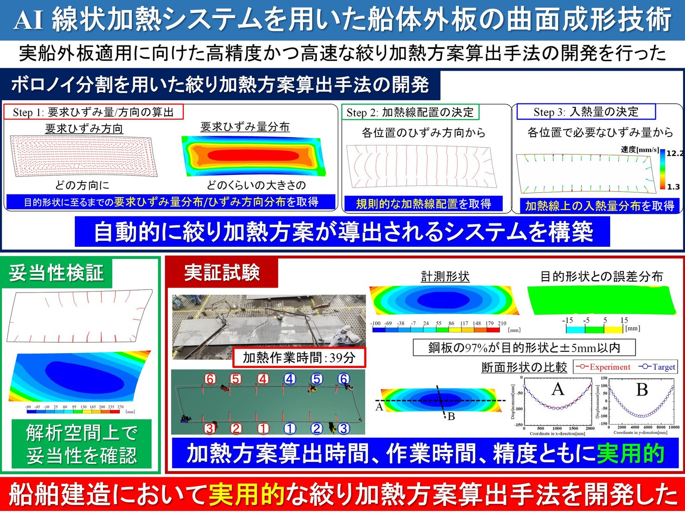

2026.10.15報告
東京TFTビルにて行われた溶接学会 秋季全国大会において、大阪大学 接合科学研究所 柴原研究室から、以下の10件の発表を行いましたのでご連絡いたします。
東京TFTビルにて行われた溶接学会 秋季全国大会において、大阪大学 接合科学研究所 柴原研究室から、以下の10件の発表を行いましたのでご連絡いたします。
【口頭発表】
■理想化陽解法を用いたSPR継手の力学的挙動に関する検討
○武原翔生、山邊晃瑠、前田新太郎、生島一樹、柴原正和
■Fourier Neural Operatorを用いた熱弾塑性解析のサロゲートモデル 構築
〇加藤拓也、前田新太郎、生島一樹、柴原正和
■Euler型解析に基づく摩擦攪拌接合 時の変形挙動に関する検討
○中川陽太、武原翔生、前田新太郎、生島一樹、柴原正和
■AI線状加熱 システムによる任意曲面成形に関する検討
○森田唯仁、坪郷尚、加藤拓也、前田新太郎、生島一樹、柴原正和
■相変態が溶接変形に及ぼす影響に関する解析的検討
○橋場大輔、柳沢祐介、後藤吉弘、生島一樹、柴原正和
■T形鋼の溶接変形に対するガス加熱矯正条件の導出
○夏目糧平、田村光亮、手銭永遠、阿部洋平、加藤拓也、前田新太郎、生島一樹、柴原正和
■理想化陽解法FEMによる相変態を考慮した多層溶接 解析
〇山内悠暉、杉村忠士、羽田野浩平、今道統也、前田新太郎、生島一樹、柴原正和
■多層溶接における簡易変形予測モデルの高度化に関する検討
〇永木勇人、王聞達、前田新太郎、生島一樹、柴原正和
■ガス加熱における入熱分布が熱変形に及ぼす影響
〇渡邉倖平、峰松伸行、前田新太郎、生島一樹、柴原正和
■溶接施工 時の諸因子の影響を考慮した溶接順序 最適化に関する検討
〇王聞達、前田新太郎、生島一樹、柴原正和

※研究室の X（@omu_shibaken の投稿）より